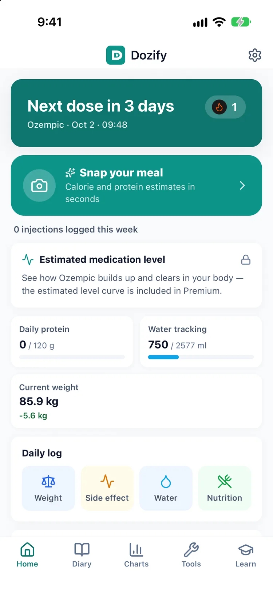
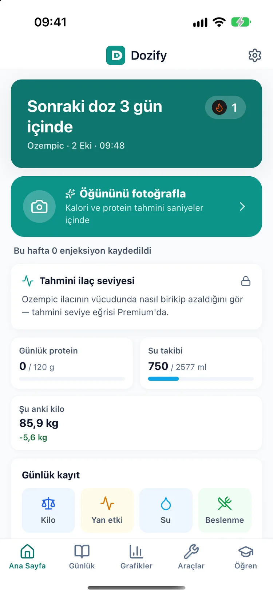

A pill tracker for Wegovy®, Rybelsus® and other GLP-1 tablets
Wegovy® hap takibi ve diğer GLP-1 tabletleri tek yerde
The problem
A weekly pen is one decision a week. A tablet is one every day, before breakfast, before coffee, before anything else, and the question at 7 a.m. is not complicated, just easy to lose: did I take it today, and has it been long enough to eat? Seven of those a week is a lot of small chances to guess.
Sorun
Haftalık kalem, haftada bir karar demek. Tablet ise her gün bir karar: kahvaltıdan önce, kahveden önce, her şeyden önce. Sabah yedide soru karmaşık değil, sadece kolay kaçıyor: bugün aldım mı, yemek için yeterince beklediğim oldu mu? Haftada yedi kez bu soruyu sormak, yedi ayrı tahmin fırsatı demek.
The tablets Dozify knows
Each of these is logged as a daily dose. When you add one, the strength picker shows the strengths listed for it in the app:
- Wegovy® tablet (oral semaglutide): 1.5, 4, 9 and 25 mg
- Ozempic® tablet (oral semaglutide): 1.5, 4 and 9 mg
- Rybelsus® (oral semaglutide): 3, 7 and 14 mg
- Foundayo® (orforglipron, Eli Lilly): 0.8, 2.5, 5.5, 9, 14.5 and 17.2 mg
That list is there so you can pick what is printed on your box. It is not a schedule and not a suggestion: which strength you take, and when it changes, is your prescriber's decision.
Dozify'ın tanıdığı tabletler
Bunların her biri günlük doz olarak kaydedilir. Birini eklediğinde doz seçici, uygulamada o ilaç için listelenen dozları gösterir:
- Wegovy® tablet (ağızdan semaglutid): 1,5, 4, 9 ve 25 mg
- Ozempic® tablet (ağızdan semaglutid): 1,5, 4 ve 9 mg
- Rybelsus® (ağızdan semaglutid): 3, 7 ve 14 mg
- Foundayo® (orforglipron, Eli Lilly): 0,8, 2,5, 5,5, 9, 14,5 ve 17,2 mg
Bu liste, kutunda yazanı seçebilmen için var. Bir program da değil, öneri de değil: hangi dozu alacağına ve ne zaman değişeceğine reçeteni yazan hekim karar verir.
The routine before breakfast
Oral semaglutide comes with instructions that are easy to get slightly wrong when you are half awake, so Dozify keeps the label note with the medication. For the Wegovy and Ozempic tablets, what the label says is: "Once daily on an empty stomach with no more than 120 mL of water. Swallow whole — do not split, crush or chew. Wait at least 30 minutes before food, other drinks or other medicines." For Rybelsus: "Take on an empty stomach 30 minutes before breakfast." Foundayo is different, and the app's note for it reads: "Can be taken with or without food, once daily."
A daily reminder set for the time you actually wake up is what turns that into a habit. Daily reminders, like dose logging, are free permanently. They are scheduled on the phone, so they arrive without a connection, as long as notifications are allowed for Dozify.
Kahvaltıdan önceki rutin
Ağızdan alınan semaglutidin talimatları, yarı uykulu hâlde azıcık yanlış uygulanmaya çok müsait; bu yüzden Dozify prospektüs notunu ilacın yanında tutar. Wegovy ve Ozempic tabletler için prospektüsün söylediği şu: "Günde bir kez, aç karnına, en fazla 120 mL su ile. Bütün yutulur — bölünmez, ezilmez, çiğnenmez. Aldıktan sonra yemek, içecek ve diğer ilaçlar için en az 30 dakika beklenir." Rybelsus için: "Kahvaltıdan 30 dakika önce boş mideyle alınır." Foundayo farklı; uygulamadaki notu şöyle: "Yemekten bağımsız alınabilir. Günde bir kez."
Bunu alışkanlığa çeviren şey, gerçekten uyandığın saate kurulmuş günlük bir hatırlatıcı. Günlük hatırlatıcılar da doz kaydı gibi kalıcı olarak ücretsiz. Telefonda planlandıkları için bağlantı olmadan da gelirler; yeter ki Dozify için bildirimlere izin verilmiş olsun.


Pen to pill, pill to pen: one history
If your prescriber moves you from an injection to a tablet, or back again, you change the medication in Dozify. The doses you already logged stay where they are, and the new daily doses continue on the same timeline, next to your weight and your side-effect journal. When you bring a report to an appointment, it covers both. Running two medications side by side at the same time is part of Premium.
Kalemden hapa, haptan kaleme: tek geçmiş
Hekimin seni iğneden tablete geçirirse ya da tersi olursa, Dozify'da ilacı değiştirirsin. Daha önce kaydettiğin dozlar yerinde kalır; yeni günlük dozlar aynı zaman çizelgesinde, kilonun ve yan etki günlüğünün yanında devam eder. Randevuya rapor götürdüğünde ikisi birden içinde olur. Aynı anda iki ilacı yan yana takip etmek ise Premium'un parçası.
Storage
Tablets do not need the fridge. The app's note for oral GLP-1 tablets is room temperature, in the original pack or bottle, protected from moisture, and the Wegovy tablet stays in its bottle until you take it. The exact temperature range is on your product's leaflet; our storage guide compares pens and tablets side by side.
Saklama
Tabletlerin buzdolabına ihtiyacı yok. Uygulamanın ağızdan alınan GLP-1 tabletleri için notu şöyle: oda sıcaklığında, orijinal ambalajında ya da şişesinde, nemden korunarak; Wegovy tablet de alınana kadar şişesinde kalır. Kesin sıcaklık aralığı ürününün prospektüsünde yazar; saklama rehberimiz kalemle tableti yan yana karşılaştırıyor.
Why there is no level curve for tablets
Dozify's Premium medication-level curve estimates how much medicine is in the body from the injections you log, using a profile for each injectable molecule. There is no such profile for the tablets in the app, so for a medication taken only by mouth the curve is not shown at all. We could draw something, but it would be a guess dressed up as a chart, and a wrong figure is worse than a blank one. Everything else (the daily log, reminders, your weight trend, the doctor report) works the same for tablets as it does for pens.
Tabletlerde neden seviye eğrisi yok
Dozify'ın Premium ilaç seviyesi eğrisi, vücuttaki ilaç miktarını kaydettiğin enjeksiyonlardan, her enjekte edilen molekül için ayrı bir profille tahmin eder. Uygulamada tabletler için böyle bir profil yok; bu yüzden yalnızca ağızdan alınan bir ilaçta eğri hiç gösterilmez. Bir şey çizebilirdik, ama grafik kılığına girmiş bir tahmin olurdu ve yanlış bir rakam, boş bir alandan daha kötüdür. Geri kalan her şey (günlük kayıt, hatırlatıcılar, kilo trendin, doktor raporu) tabletlerde de kalemlerde olduğu gibi çalışır.
Download on the App Store App Store'dan indir
Questions
Sorular
Can I track the Wegovy pill in Dozify?
Wegovy hapını Dozify'da takip edebilir miyim?
Yes. The Wegovy tablet is in the medication list as a daily oral dose, with the strengths listed for it, its label note and a daily reminder. The Ozempic tablet, Rybelsus and Foundayo are there too.
Evet. Wegovy tablet, ilaç listesinde günlük ağızdan doz olarak; listelenen dozları, prospektüs notu ve günlük hatırlatıcısıyla yer alıyor. Ozempic tablet, Rybelsus ve Foundayo da listede.
Will it remind me every morning?
Her sabah hatırlatıyor mu?
Yes, at the time you choose. Daily reminders are free permanently. A reminder is an iOS notification, so notifications need to be on for Dozify and not silenced by a focus mode.
Evet, seçtiğin saatte. Günlük hatırlatıcılar kalıcı olarak ücretsiz. Hatırlatıcı bir iOS bildirimi olduğu için Dozify'ın bildirimlerinin açık olması ve bir odak modunca susturulmaması gerekir.
Why can't I see the medication-level curve for my tablet?
Tabletim için neden ilaç seviyesi eğrisini göremiyorum?
Because the app has no profile for oral medicines and does not invent one. The curve is built only for injections. For a tablet, Dozify shows nothing rather than a number it cannot stand behind.
Çünkü uygulamada ağızdan alınan ilaçlar için bir profil yok ve uygulama bir profil uydurmuyor. Eğri yalnızca enjeksiyonlar için çiziliyor. Tablette Dozify, arkasında duramayacağı bir rakam göstermek yerine hiçbir şey göstermez.
Will the app tell me which strength to take or when to go up?
Uygulama hangi dozu alacağımı ya da ne zaman artıracağımı söylüyor mu?
No. The strengths in the picker are the ones listed for each product, there so you can record what you were prescribed. Dozify records your prescriber's plan; it never proposes one.
Hayır. Seçicideki dozlar her ürün için listelenen dozlardır ve sana reçete edileni kaydedebilmen için oradadır. Dozify hekiminin planını kaydeder; asla bir plan önermez.
I am switching from injections to a tablet. Do I lose my history?
İğneden tablete geçiyorum. Geçmişim kaybolur mu?
No. The injections you logged stay in the record, and the tablet doses continue on the same timeline with your weight and symptoms.
Hayır. Kaydettiğin enjeksiyonlar kayıtta kalır; tablet dozları kilon ve belirtilerinle aynı zaman çizelgesinde devam eder.
Does Dozify support Foundayo (orforglipron)?
Dozify Foundayo'yu (orforglipron) destekliyor mu?
Yes, as a daily tablet with the strengths listed for it. The app's note describes it as once daily, with or without food, and FDA-approved in April 2026 for chronic weight management.
Evet, listelenen dozlarıyla günlük tablet olarak. Uygulamadaki not onu günde bir kez alınan, yemekten bağımsız alınabilen ve ABD'de Nisan 2026'da kilo yönetimi için onaylanmış bir ilaç olarak tanımlıyor.
Read next
Guides, with their sources named: what GLP-1 actually is, injections and tablets, what the leaflet says about a missed dose and storing pens and tablets.
Elsewhere in Dozify: the shot tracker for weekly pens, the estimated medication-level curve, AI calories and protein from a photo and the doctor report.
Sonra şunlar
Kaynağı yazılı rehberler: GLP-1'in aslında ne olduğu, iğnesi ve tableti, kaçan doz için prospektüsün ne dediği ve kalem ve tabletleri saklamak.
Dozify'ın diğer yanları: haftalık kalemler için iğne takibi, tahmini ilaç seviyesi eğrisi, fotoğraftan kalori ve protein ve doktor raporu.